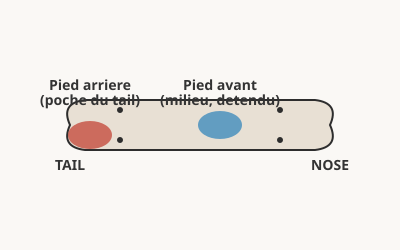
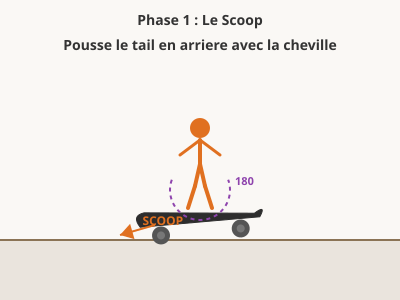
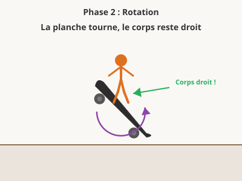
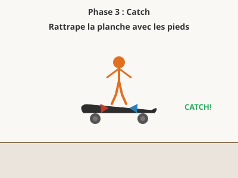
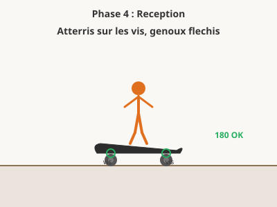

Description
Le pop shuvit consiste a faire tourner la planche de 180 degres en backside grace a une impulsion du pied arriere (le scoop), tout en restant face a la direction de deplacement. C'est l'un des premiers tricks de rotation de planche a apprendre apres le ollie.
Prerequis
- Maitriser le ollie basique
- Etre a l'aise en roulant a vitesse moderee
- Savoir rattraper la planche avec les pieds apres un saut
Position des pieds

Pied arriere
Sur le tail, orteils dans le coin arriere cote talons (poche du tail)
Pied avant
Au milieu de la planche, detendu, pret a se lever
Les 4 phases du Pop Shuvit




Etapes detaillees
- Roule a vitesse moderee, genoux flechis, poids centre.
- Place ton pied arriere dans la poche du tail (coin arriere cote talons).
- Pop le tail en poussant vers l'arriere avec la cheville (scoop). C'est un mouvement de grattage en arriere.
- Leve le pied avant pour laisser la planche tourner librement sous toi.
- Reste au-dessus de la planche, le corps ne tourne pas. Garde les epaules droites.
- Repere la planche quand elle a fait 180, rattrape-la avec les pieds sur les vis.
- Atterris genoux flechis, poids centre, et roule.
Progression d'apprentissage
Le Shuvit (sans pop)
Comprendre la rotation sans hauteur
Scoop a l'arret
A l'arret, pousse le tail en arriere pour faire tourner la planche.
10 shuvits rattrapes d'affilee
Shuvit en roulant
Roule tres lentement et fais un shuvit.
5 reussites d'affilee
Corps droit
Verifie que tes epaules restent face a la direction.
5 shuvits avec corps parfaitement droit
Ajouter le pop
Combiner pop et scoop pour un vrai pop shuvit
Pop shuvit a l'arret
Combine le pop vers le bas et le scoop vers l'arriere.
10 pop shuvits a l'arret
Pop shuvit en roulant lentement
Roule a faible vitesse et fais un pop shuvit complet.
5 reussites d'affilee
Pop shuvit a vitesse normale
Augmente la vitesse progressivement.
5 reussites d'affilee
Hauteur et style
Pop shuvit plus haut et plus propre
Pop shuvit avec hauteur
Force le pop pour faire monter la planche plus haut.
5 pop shuvits hauts d'affilee
Rattrape propre
Rattrape la planche en l'air, pas attendre qu'elle retombe.
5 catches propres d'affilee
Par-dessus un obstacle
Pop shuvit par-dessus un petit obstacle.
3 reussites d'affilee
Variations et combos
Integrer le pop shuvit dans des enchainements
Frontside pop shuvit
Inverse la rotation : la planche tourne vers l'avant.
3 reussites d'affilee
Manual -> Pop shuvit out
Sors d'un manual avec un pop shuvit.
3 reussites d'affilee
Pop shuvit en descente
Pop shuvit en descendant une marche ou un ledge.
3 reussites d'affilee
Exercices pratiques
Le scoop fantome Phase 1
Sur l'herbe, sans monter sur la planche, entraine le mouvement de scoop avec le pied.
Le shuvit tapis Phase 1
Sur un tapis ou l'herbe, fais un shuvit complet sans rouler.
Le pop and catch Phase 2
A l'arret, concentre-toi uniquement sur rattraper la planche avec le pied avant.
Le couloir Phase 2
Trace deux lignes paralleles a 50 cm. Fais un pop shuvit et atterris entre les lignes.
Le pop shuvit monte Phase 3
Monte les genoux au maximum pour donner de la place a la planche.
Le combo manual-shuvit Phase 4
Manual de 2-3 metres puis sors avec un pop shuvit.